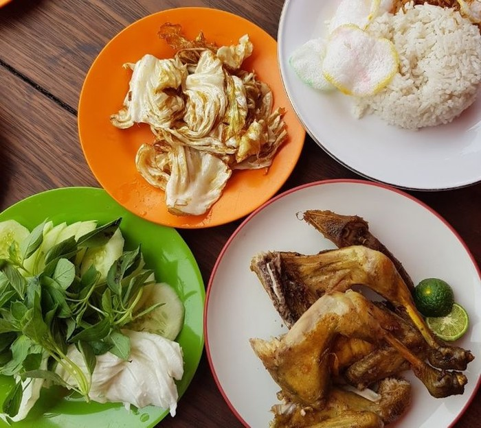

Lamongan

"Lamongan Rice," also known as "Pecel Ayam"
Ingredients
🍗 Fried Chicken Ingredients :
-
1 kg chicken (I use 1/2 kg wings & 1/2 kg drumsticks)
-
1 stalk lemongrass, crushed
- 1 stalk lemongrass, crushed
- 1 thumb-sized galangal, crushed
- 2 kaffir lime leaves
- 1 bay leaf
- 1/2 tbsp coriander powder
- 1/2 tsp pepper
- 1/2 tbsp mushroom broth
- 1 1/2 squeezed tbsp salt
- 3 tsp granulated sugar
- 1 tbsp tapioca flour
- 1 tbsp rice flour
- Enough cooking oil
🍗 Ground Spices :
- 5 cloves garlic
- 4 candlenuts
- 1 segment turmeric
- 1 segment ginger
- Enough oil/water
🍗 Sambal Ingredients :
- 10 red bird's eye chilies
- 2 curly red chilies
- 2 cloves garlic
- 2 shallots
- 1 sachet ABC shrimp paste
- 1 tomato, cut in half
- Enough brown sugar
- Enough salt
- Mushroom broth
- Enough oil for frying
Complements :
- Cucumber and cabbage slices
- Fried shallots
- Fried tempeh
🍗 Pecel Ayam Instructions :
- Clean and cut the chicken into preferred pieces.
- Marinate the chicken with crushed lemongrass, galangal, kaffir lime leaves, bay leaf, coriander powder,
pepper, mushroom broth, salt, sugar, tapioca flour, and rice flour. Allow it to marinate for at least 30
minutes.
- Heat enough cooking oil in a deep pan or fryer.
- Fry the marinated chicken until golden brown and cooked through. Drain excess oil on paper towels.
- Blend garlic, candlenuts, turmeric, and ginger into a smooth paste using oil or water.
- Blend red bird's eye chilies, curly red chilies, garlic, shallots, ABC shrimp paste, and tomato into a
smooth sambal paste.
- Heat oil in a pan, sauté the sambal paste until fragrant. Add brown sugar, salt, and mushroom broth to
taste. Adjust consistency with water if needed. Set aside.
- Slice cucumbers and cabbage for lalapan (fresh vegetables).
- Fry shallots until crispy.
- Fry tempeh until golden brown and crispy.
- Arrange the fried chicken on a plate.
- Serve with steamed rice, sambal, lalapan, and fried shallots.
- Enjoy your delicious Pecel Ayam!